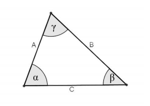

Reporte #1 (Operaciones realizadas durante el juego)
Reporte de penalizaciones fáciles:
Se realizó con éxito la operación 3 en la primera penalización
Instrucciones: Mediante ley de cosenos encontrar lado C y ángulos \(\alpha\) y \(\beta\) del siguiente triángulo

Los datos fueron los siguientes:
Lado A = 18.0
Lado B = 25.0
Ángulo \(\gamma\) = 30 grados
Utilizando la fórmula \(c^2 = b^2 + a^2 - 2ab*\cos(\gamma)\)
Despejamos para c = \(\sqrt{b^2 + a^2 - 2ab*\cos(\gamma)}\)
Para hallar \(\alpha\) = \[ \arccos = (-{ b^2 - a^2 - c^2\over 2ac}) \]
Para hallar \(\beta\) = \[ \arccos = (-{ a^2 - b^2 - c^2\over 2bc}) \]
Los resultados fueron los siguientes:
Lado B = 13.022 unidades
Ángulo \(\alpha\) = 106.28 grados
Ángulo \(\beta\) = 43.72 grados
Se realizó con éxito la operación 3 en la segunda penalización
Instrucciones: Mediante ley de cosenos encontrar lado C y ángulos \(\alpha\) y \(\beta\) del siguiente triángulo
Los datos fueron los siguientes:
Lado A = 18.0
Lado B = 25.0
Ángulo \(\gamma\) = 30 grados
Utilizando la fórmula \(c^2 = b^2 + a^2 - 2ab*\cos(\gamma)\)
Despejamos para c = \(\sqrt{b^2 + a^2 - 2ab*\cos(\gamma)}\)
Para hallar \(\alpha\) = \[ \arccos = (-{ b^2 - a^2 - c^2\over 2ac}) \]
Para hallar \(\beta\) = \[ \arccos = (-{ a^2 - b^2 - c^2\over 2bc}) \]
Los resultados fueron los siguientes:
Lado B = 13.022 unidades
Ángulo \(\alpha\) = 106.28 grados
Ángulo \(\beta\) = 43.72 grados
Reporte de penalizaciones Intermedias:
Se realizó con éxito la operación 1 en la tercera penalización
Instrucciones: Realizar la suma de matrices de A y B
Datos:
Matriz A: $$\begin{pmatrix}7.0&48.0&5.0&0.0&1.0\\\ 57.0&8.0&4.0&6.0&14.0\\\ 0.0&5.0&6.0&78.0&15.0\\\ 21.0&14.0&8.0&19.0&54.0\\\ 32.0&20.0&26.0&47.0&12.0\\\ \end{pmatrix}$$
Matriz B: $$\begin{pmatrix}9.0&5.0&2.0&1.0&8.0\\\ 4.0&2.0&3.0&47.0&8.0\\\ 48.0&55.0&32.0&19.0&6.0\\\ 7.0&56.0&32.0&14.0&8.0\\\ 32.0&87.0&0.0&1.0&7.0\\\ \end{pmatrix}$$
Para realizar esta operación tanto A como B deben tener las mismas dimensiones
La matriz resultante se obtiene sumando los elementos de las dos matrices que ocupan la misma posición
La matriz resultante fue:
Matriz R: $$\begin{pmatrix}16.0&53.0&7.0&1.0&9.0\\\ 61.0&10.0&7.0&53.0&22.0\\\ 48.0&60.0&38.0&97.0&21.0\\\ 28.0&70.0&40.0&33.0&62.0\\\ 64.0&107.0&26.0&48.0&19.0\\\ \end{pmatrix}$$
Se realizó con éxito la operación 1 en la cuarta penalización
Instrucciones: Realizar la suma de matrices de A y B
Datos:
Matriz A: $$\begin{pmatrix}4.0&9.0&7.0&45.0&18.0\\\ 7.0&51.0&26.0&8.0&38.0\\\ 48.0&26.0&37.0&21.0&19.0\\\ 1.0&0.0&6.0&8.0&1.0\\\ 2.0&19.0&55.0&25.0&15.0\\\ \end{pmatrix}$$
Matriz B: $$\begin{pmatrix}0.0&2.0&15.0&1.0&66.0\\\ 21.0&48.0&62.0&7.0&33.0\\\ 4.0&88.0&0.0&68.0&4.0\\\ 25.0&18.0&24.0&7.0&55.0\\\ 24.0&15.0&36.0&5.0&98.0\\\ \end{pmatrix}$$
Para realizar esta operación tanto A como B deben tener las mismas dimensiones
La matriz resultante se obtiene sumando los elementos de las dos matrices que ocupan la misma posición
La matriz resultante fue:
Matriz R: $$\begin{pmatrix}4.0&11.0&22.0&46.0&84.0\\\ 28.0&99.0&88.0&15.0&71.0\\\ 52.0&114.0&37.0&89.0&23.0\\\ 26.0&18.0&30.0&15.0&56.0\\\ 26.0&34.0&91.0&30.0&113.0\\\ \end{pmatrix}$$
Reporte de penalizaciones Difíciles:
Se realizó con éxito la operación 1 en la quinta penalización
Instrucciones: Realizar la división de matrices de A y B
La división de dos matrices es la multiplicación de una matriz por la matriz inversa de la matriz divisora, y al mismo tiempo, exige que la matriz divisora sea una matriz cuadrada y que su determinante sea distinto de cero.
La fórmula quedaría así: \[ A = ({ A \over B}) = A*B^-1 \]
Lo siguiente es sacar la inversa de B una vez comprobado que su determinante no es cero utilizaríamos la siguiente fórmula
\[ B^{-1} = ({ 1 \over \det{B^{-1}} })*Adj(B^t) \]
Sabiendo esto nuestros datos son los siguientes:
Matriz A:
$$\begin{pmatrix}5.0&10.0&1.0&3.0\\\ 9.0&14.0&2.0&6.0\\\ 7.0&8.0&15.0&3.0\\\ 6.0&8.0&9.0&2.0\end{pmatrix}$$
Matriz B:
$$\begin{pmatrix}5.0&13.0&9.0&4.0\\\ 1.0&9.0&6.0&3.0\\\ 8.0&11.0&69.0&33.0\\\ 25.0&6.0&7.0&4.0\end{pmatrix}$$
El determinante de B es: 7672.0
La Matriz Inversa de B es :
$$\begin{pmatrix}0.041&-0.081&-0.002&0.036\\\ 0.027&0.089&-0.011&-0.005\\\ 0.821&-1.125&0.018&-0.125\\\ -1.736&2.342&-0.003&0.255\end{pmatrix}$$
La multiplicación de \(A*B^{-1}\)
$$\begin{pmatrix}3.915&-6.39&0.108&-0.762\\\ 8.031&-12.324&0.15&-1.521\\\ -7.615&9.702&-0.16&0.906\\\ -4.381&5.213&-0.057&0.446\end{pmatrix}$$
Se realizó con éxito la operación 1 en la sexta penalización
Instrucciones: Realizar la división de matrices de A y B
La división de dos matrices es la multiplicación de una matriz por la matriz inversa de la matriz divisora, y al mismo tiempo, exige que la matriz divisora sea una matriz cuadrada y que su determinante sea distinto de cero.
La fórmula quedaría así: \[ A = ({ A \over B}) = A*B^-1 \]
Lo siguiente es sacar la inversa de B una vez comprobado que su determinante no es cero utilizaríamos la siguiente fórmula
\[ B^{-1} = ({ 1 \over \det{B^{-1}} })*Adj(B^t) \]
Sabiendo esto nuestros datos son los siguientes:
Matriz A:
$$\begin{pmatrix}5.0&10.0&1.0&3.0\\\ 9.0&14.0&2.0&6.0\\\ 7.0&8.0&15.0&3.0\\\ 6.0&8.0&9.0&2.0\end{pmatrix}$$
Matriz B:
$$\begin{pmatrix}5.0&13.0&9.0&4.0\\\ 1.0&9.0&6.0&3.0\\\ 8.0&11.0&69.0&33.0\\\ 25.0&6.0&7.0&4.0\end{pmatrix}$$
El determinante de B es: 7672.0
La Matriz Inversa de B es :
$$\begin{pmatrix}0.041&-0.081&-0.002&0.036\\\ 0.027&0.089&-0.011&-0.005\\\ 0.821&-1.125&0.018&-0.125\\\ -1.736&2.342&-0.003&0.255\end{pmatrix}$$
La multiplicación de \(A*B^{-1}\)
$$\begin{pmatrix}3.915&-6.39&0.108&-0.762\\\ 8.031&-12.324&0.15&-1.521\\\ -7.615&9.702&-0.16&0.906\\\ -4.381&5.213&-0.057&0.446\end{pmatrix}$$